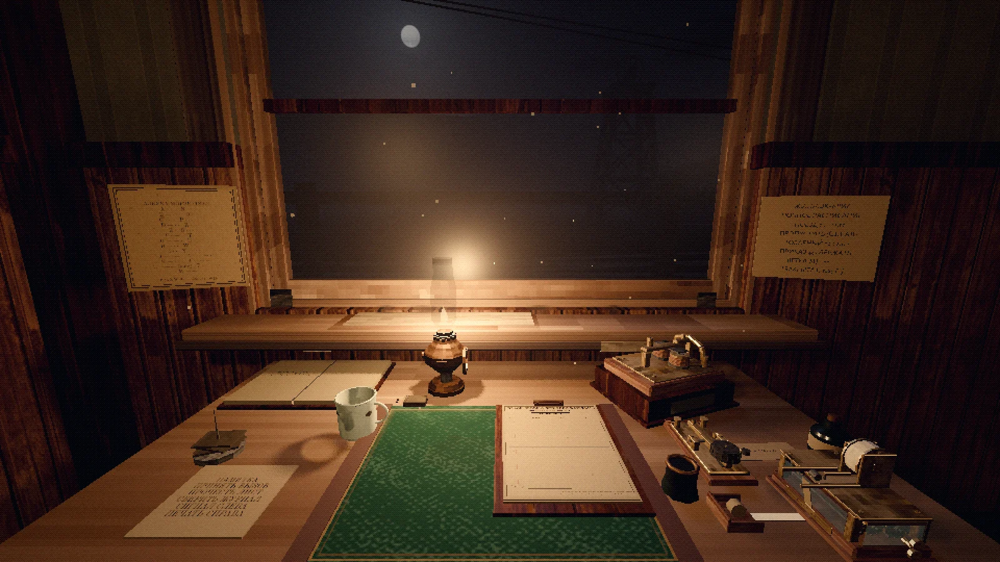
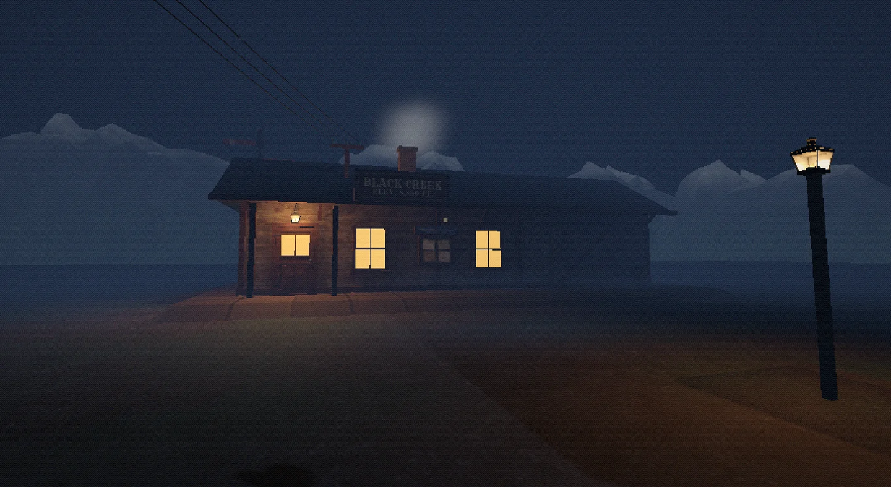
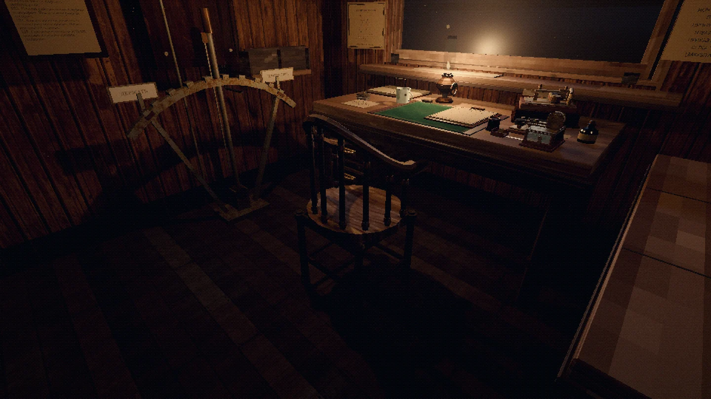
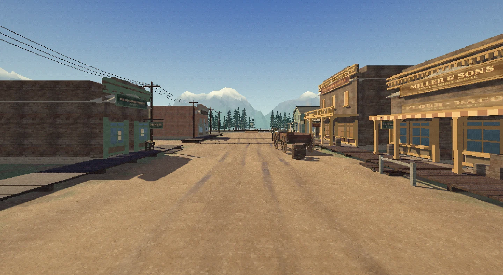
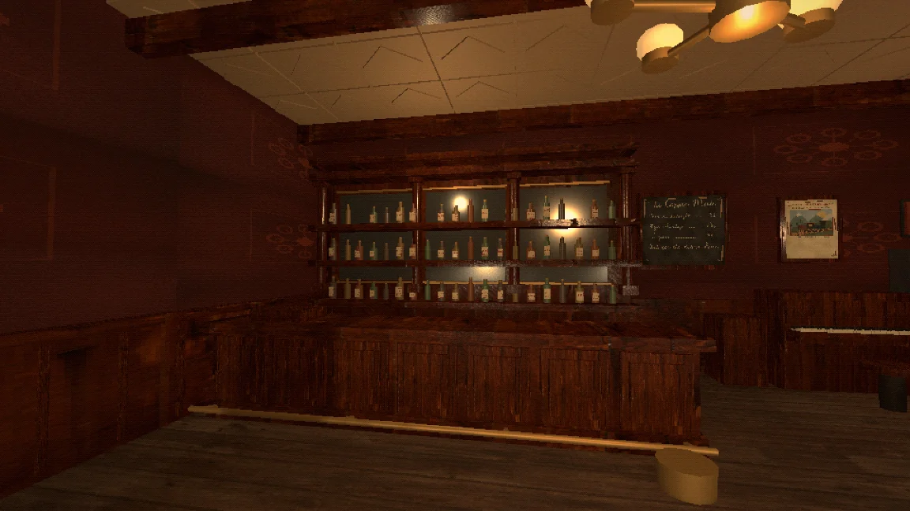

I
Separated Truth
The game architecture physically separates the true wire, Elias's perception, and the written sheet. The tape register only measures current.

You hear one thing.
Your hand writes another.
A first-person psychological horror game about an 1890 railroad telegraph operator, an unblinking bay window, and a paper record that refuses to match your memory.
You are Elias Crane, night operator at Black Creek Station. Most nights the brass sounder and your pen agree. On this shift, the wire transmits one word — and your own handwriting puts another on the form.
American Morse as sent over the wire. Objective current. The line never changes what it sent.
In your own hand, on company stock. Until you check the mechanical tape register, you have no reason to doubt it.
Objective American Morse timed by the dispatcher. Recorded in ink dots and dashes before perception touches it.
What an exhausted operator hears inside a creaking wood station while keeping half an eye on the glass.
What your pen commits to the yellow-cream night copy — the sheet morning audits will judge.
The register never reads English, only current. You alone decide whether to trust your hand or amend the record.
In late-nineteenth-century American railroading, two printed paper blanks separated safe caution from corporate speed. Click a form on the desk baize to inspect the rulebook difference.
Continuous darkness numbs fear in twenty minutes. FORM 19 pairs claustrophobic night shifts inside the depot with bright April mornings across Black Creek's street and saloon.


Swivel smoothly from the desk instruments to the cast-iron signal stand, the latched door, and the filing ledger.
Turn the brass lamp up to read fine handwriting — or dim the flame to pierce reflections on the northern glass.
Set the train-order quadrant, check the paper register, and answer on the key while the window waits behind your shoulder.
What moves beyond the panes exists only in the gap between glances. Nothing breaks audio fairness.


Step off the morning shift into crisp Colorado sun: pick up wages, read The Black Creek Chronicle, and talk to townsfolk.
Order a 10-cent whiskey, spin the mechanical Silver Spur, play a hand of Faro, and listen to bartender Silas Vance.
Read public boards, store ledgers, and archived newspapers. Clues found in daylight reshape what you suspect on the night wire.
The warmer and livelier the town feels at noon, the harder it becomes to walk back across the tracks at dusk.
Direct 5-bit Bayer dithered frames from the Godot 4 build — night depot bay, mechanical instruments, sunlit boardwalks, and Boarding House Room #4.
The game architecture physically separates the true wire, Elias's perception, and the written sheet. The tape register only measures current.
Every station task asks you to look away from something else. The sounder never pauses while you check the yard or throw the signal.
Mistakes rarely trigger a game-over screen. Misfiled orders and missed routes stay in the ledger and surface later.
Critical Morse transmissions stay legible at 1.2–4.0 kHz. Atmosphere and tension never cheat or drown out readable signal.